A hyper-realistic cinematic editorial portrait of the uploaded person (preserve face 100%). She stands tall in a dark moody studio,surrounded by soft drifting smoke under a dramatic spotlight.Outfit:Oversized slate-blue luxury suit with wide-leg trousers, paired with a slightly unbuttoned white silk shirt. Both hands tucked casually in pockets, shoulders relaxed, confident expression, head tilted slightly upward.
PROMPT #2
Black and white portrait
Please generate a top-angle and close-up black and white portrait of my face, focused on the head facing forward. Use a 35mm lens look, 10.7K 4HD quality. Proud expression, waterdroplets on my face. Deep blackshadow background - only the face
PROMPT #3
35mm B&W portrait
Prompt: "Please generate a top-angle and close-up black and white portrait of my face, focused on the head facing forward. Use a 35mm lens look, 10.7K 4HD quality. Proud expression. Deep blackshadow background - only the face and the upper chest and shoulder"
PROMPT #4
Dreamy cinematic portrait
Dreamy cinematic portrait of a young stylish 19 years old young man standing in a tall grass field filled with soft white pampas flowers. He is wearing on all-white outfit: a white button up loose fit shirt with sleeves slightly rolied and white trousers. Pose: standing naturally body facing forward, head slightly tilted down, eye's looking softly downward with a calm and thoughtful expression. Once hand holding a pampas flower gently in front, the other hand casually in his pocket. Background: softly blurred white pampas flower glowing in sunlight, dreamy bright atmosphere. Camera Angele: medium shot from the front at eye level and wide angle and full side frame.
Style: cinematic, soft tones, pastel colours, bright daylight, slightly overexposed for a glowing effect, not overly sharp, film-like mood. Generet photo
PROMPT #5
young Indian man
Convert, 4k HD realistic, A stunning portrait of a young Indian man with hairs like mine .
He is wearing a white and silver colour shervani with dhoti & duppta slaying down from his neck & silver watch in his hand . He is looking slightly to his right, with a soft, serene expression. I want same face as I uploaded no alternation 100 percent same. The background is a plain, warm-toned wall, illuminated by a warm light source from the right, creating a distinct, soft-edged shadow of his profile and hair on the wall behind her. The overall mood is retro and artistic.
PROMPT #6
Lounging on a couch
A cinematic low-light portrait of a South Asian man lounging on a couch, wearing an open button silk shirt, layered necklace. He holds a cigar in one hand and a crystal glass of whiskey in the other. Warm golden light highlights the smoke around him, while the background stays dark and moody. Expression, exuding power and calm authority. Ultra photorealistic, cinematic shadows, 8K quality.
PROMPT #7
Stunnin portrait
Convert, 4k HD realistic, A stunning portrait of a young Indian man with usual length, dark, little wavy hair.
The subject is in mustard yellow embroidered kurta in a warm green tone with delicate details. He is looking slightly to his right, with a soft, serene masculine expression. He is posing with a watch in his left hand. I want same face as I uploaded, no alternation, 100 percent same. The full size image. The background is a plain, warm-toned wall, illuminated by a warm light source from the right, creating a distinct, soft-edged shadow of his profile and hair on the wall behind him. The overall mood is retro and artistic
PROMPT #8
vertical portrait
A high-resolution, cinematic, and photorealistic close-up profile tall vertical portrait of a man. The image features dramatic split-lighting with a vibrant, glowing red light illuminating the top of his face and a contrasting,
PROMPT #9
editorial studio portrait
Prompt : Generate a hyper-realistic cinematic editorial studio portrait of the uploaded person (preserve the exact real face, hairstyle, skin tone, and body identity no changes
Scene: dark luxury studio with thick drifting smoke, adding dramatic layers and depth.
Lighting: top-left spotlight cutting through haze, creating strong highlights and deep cinematic shadows across the
1,340
2,366
frame.
Composition: show two versions of the same person in the same frame.
5
325
1. One leaning casually against a tall black studio cube with arms crossed, looking slightly off-camera with confidence.
2. The other seated forward on a stool with elbows on knees, hands clasped, gazing directly at the camera with
intensity
Outfit both wear the same sharp floor shadows, and layered contrast.
Ratio: 9:16 vertical
PROMPT #10
stylish young man
A stylish young man, looking thoughtful, with warm, dramatic lighting creating strong shadows on a textured background. He's wearing a slightly unbuttoned collared shirt and tailored trousers, with a single red rose tucked into
PROMPT #11
rain-covered window
Cinematic headshot of me behind a rain-covered window at night. Reflections and raindrops partially obscure my face, but my expression is still visible. Cool lighting, moody atmosphere, 4:3 portrait framing. Emphasize emotion and visual storytelling.
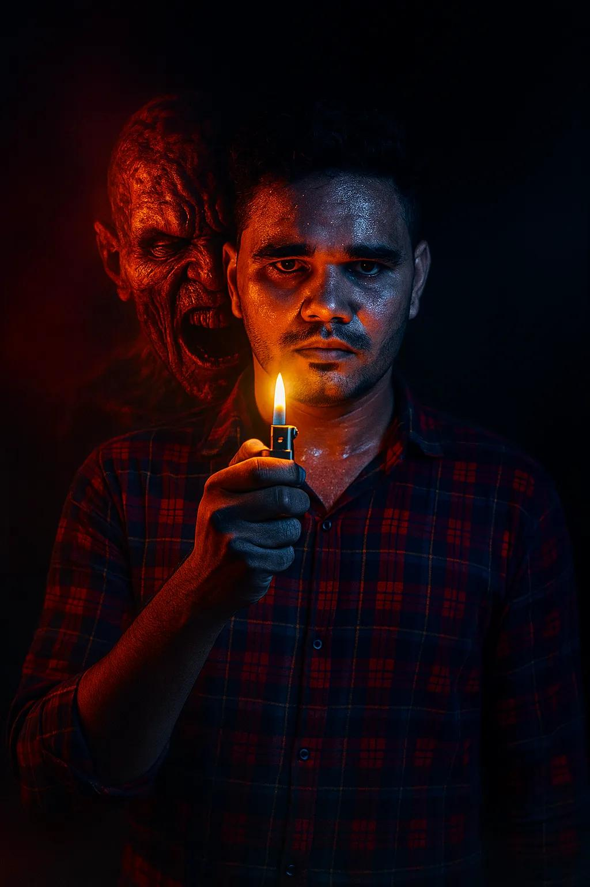
PROMPT #12
horror portrait
A cinematic horror portrait of [insert man’s profile photo]. The man holds a lit lighter close to his face, the flame casting dramatic orange and blue light across his sweaty skin. His expression is tense, staring directly forward. Behind him, in the darkness, a sinister demonic face whispers into his ear, half-hidden in the shadows, with grotesque textures and glowing red tones.
[Chatgpt, Copilot, Gemini Ai, Horror, Dark]
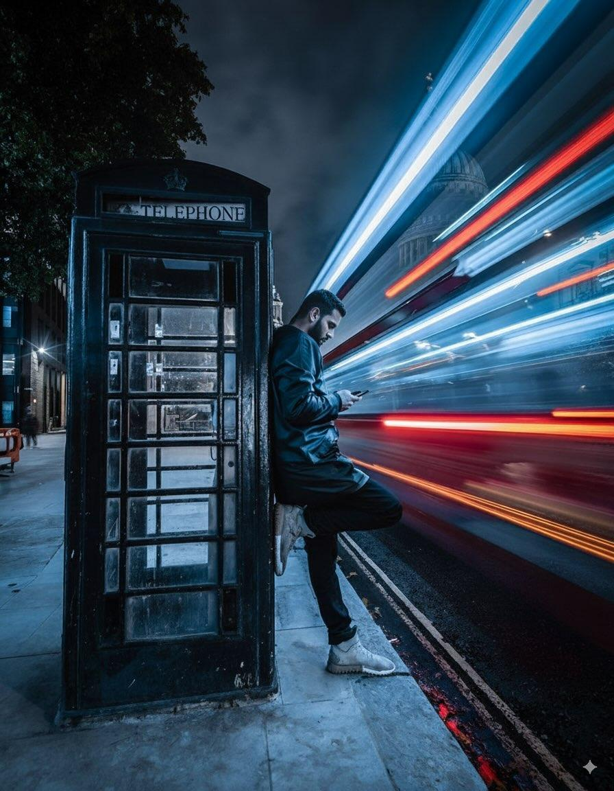
PROMPT #13
urban night scene
A young man in a dark hoodie, dark pants, and light sneakers, leaning against a classic black British telephone booth on a city street at night. He is looking at his phone. To the right, vibrant long exposure light trails of red and blue streak horizontally across the frame, indicating fast-moving vehicles. In the background, the dome of a building (St. Paul's Cathedral style) is faintly visible. The scene has a cool, desaturated blue-gray color tone with deep shadows, starkly contrasted by the light trails.
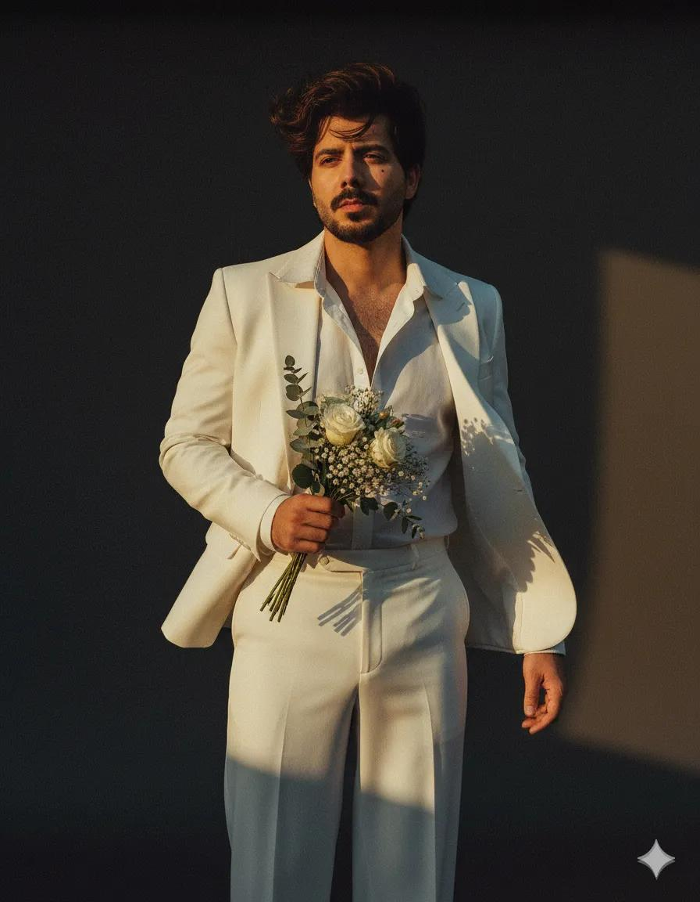
PROMPT #14
retro vintage look
Create a retro vintage grainy but bright image of the reference picture but draped in a perfect white colour suit, Pinteresty aesthetic retro pants. It must feel like a '90s movie hair baddie with a small flower bouquet in hand and romanticising a windy environment. The man is standing against a solid deep shadow and contrast drama, creating a mysterious and artistic atmosphere where the lighting is warm with golden tones evoking a sunset or golden hour glow. The background is minimalist.
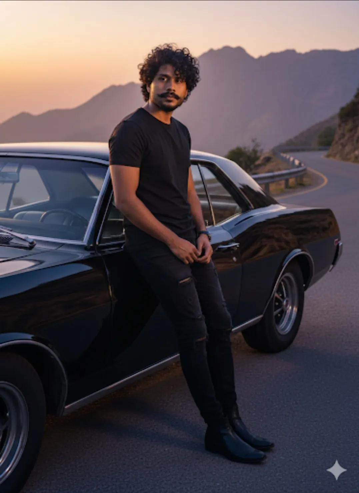
PROMPT #15
Romantic '90s vibe
Create a retro vintage grainy but bright image of the reference picture but draped in a perfect white colour suit, Pinteresty aesthetic retro pants. It must feel like a '90s movie hair baddie with a small flower bouquet in hand and romanticising a windy environment. The man is standing against a solid deep shadow and contrast drama, creating a mysterious and artistic atmosphere where the lighting is warm with golden tones evoking a sunset or golden hour glow. The background is minimalist.
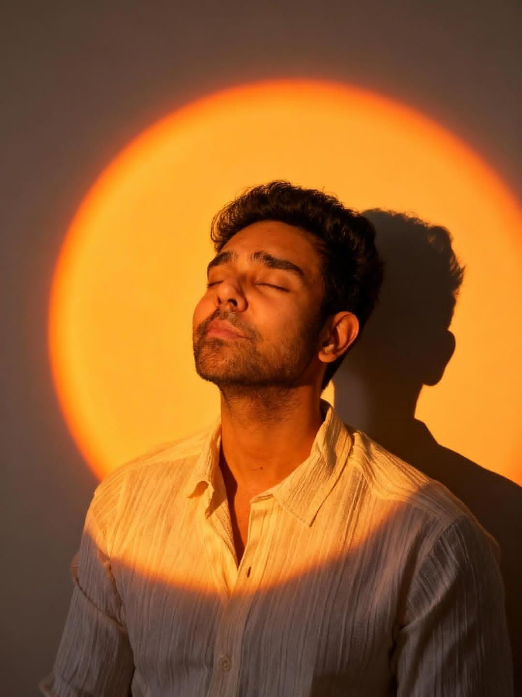
PROMPT #16
Moody portrait, golden hour
Prompt: moody studio portrait of the upload person, bethed in golden-orange spotlight that create glowing circular halo behind Thema on the wall. The warm light should sculpt the face and upper body with soft, sunset-like tones, while casting s strong head shadow to the right. Style the person. Her eye are closed and chin tilted slightly up
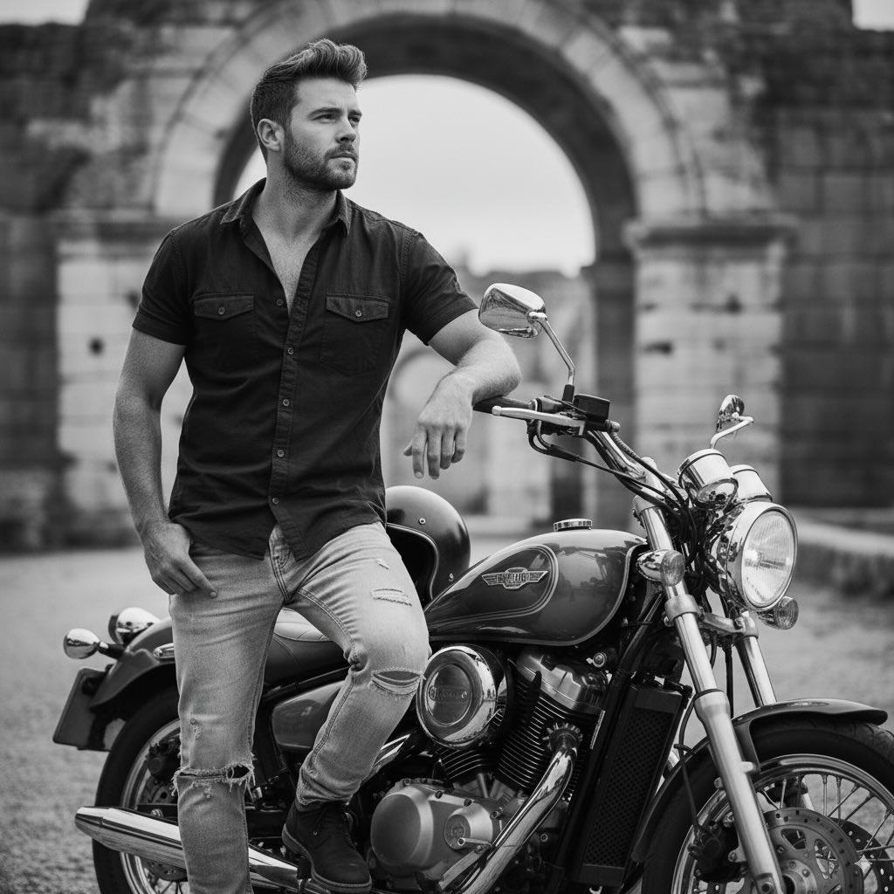
PROMPT #17
Rugged, black and white
A black and white, full-length portrait features a rugged man with a beard and short, tousled hair, leaning against a classic-style motorcycle. He is wearing a dark, short-sleeved, collared shirt with buttons undone at the top, and light-colored ripped jeans. His left arm is casually resting on a dark motorcycle helmet placed on the seat of the bike, while his right hand is on his hand near his hip. He is looking at the camera with a contemplative expression.
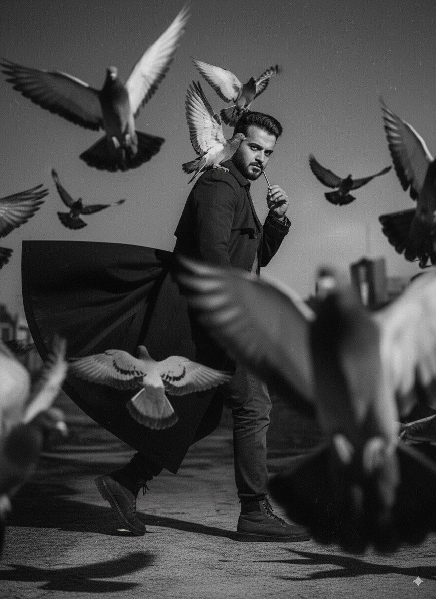
PROMPT #18
Cinematic, mysterious portrait
A mysterious black-and-white cinematic portrait of a young slim body man in a long dark trench coat, surrounded by pigeons flying dramatically around him. Some pigeons fly very close to the camera, wings blurred in motion, others perch on his shoulder. His expression is serious and enigmatic, half of his face obscured by a pigeon in the foreground. Moody lighting with strong shadows and highlights, high-contrast monochrome film style, grainy analog texture, surreal mystical fashion
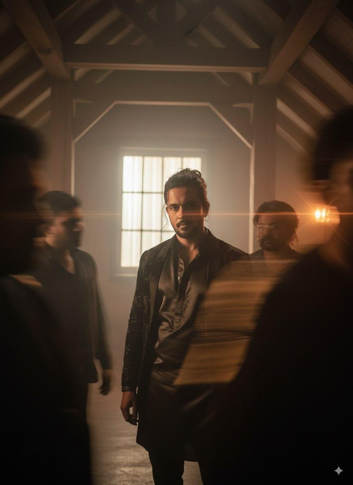
PROMPT #19
Dusky, cinematic editorial
Fashion editorial cinematic portrait, blurred silhouettes trailing foreground, Man Fashionable Costume,glowing in dusky attic atmosphere. Shot on Sony A7R V + 135mm f/1.8 lens, bokeh-heavy shallow depth. Lighting: soft window light + haze diffusion, warm amber prism glow. Background: wooden beams, diffused matte glass with vertical stripes. Styling: , messy loose bun. Editorial mood: Dazed magazine dreamscape. Keywords: cinematic dusky tones, lens flare, 3:4, tonal haze, art direction
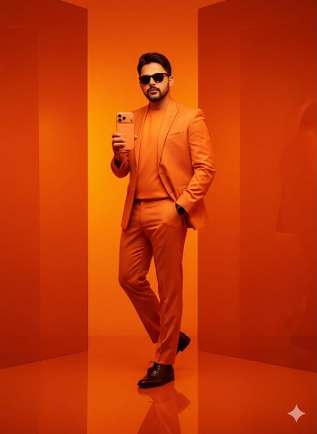
PROMPT #20
Orange, energetic vibe
Prompt 169: For those who are waiting for iPhone 17 Pro Max (Orange) 😌 Prompt 1/2: Transform the photo into a vibrant editorial ad. The subject holds the Orange iPhone 17 with a confident, stylish gesture, dressed in a fashion-forward, monochrome orange outfit that blends with the phone's bold color. The background is a dynamic mix of bright orange gradients and glossy textures, immersing the entire shot in an energetic, modern vibe.
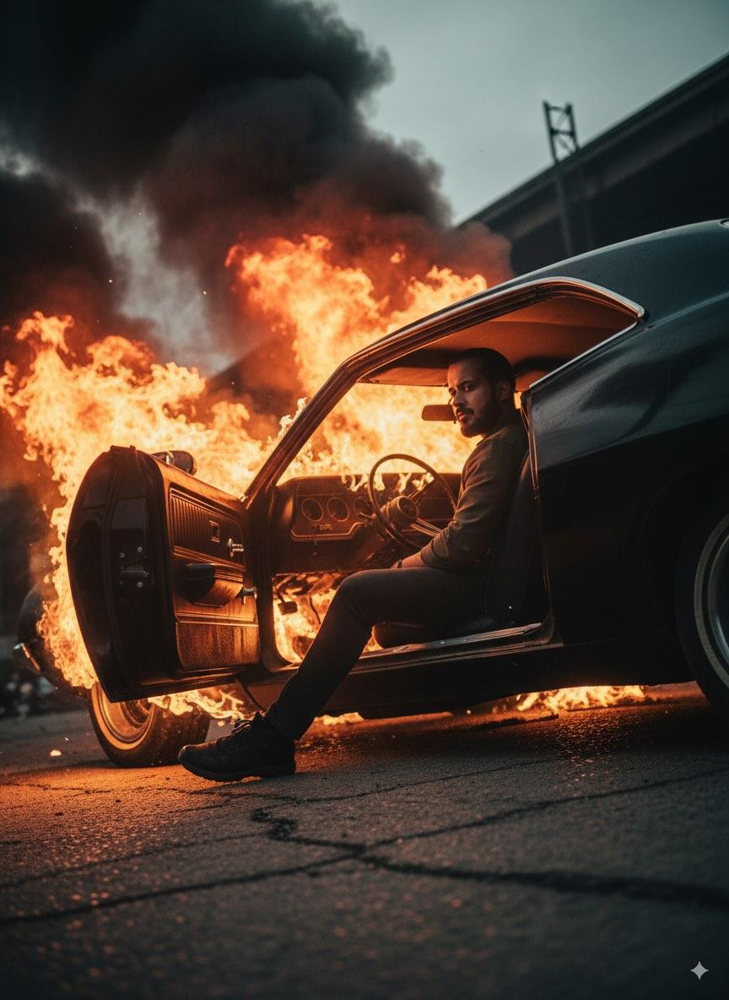
PROMPT #21
Cinematic, fiery car scene
Extreme low-angle cinematic shot of a man in the image, his skin luminous under the glow of firelight. Her hair is clean, well-maintained, and swept back naturally by the wind. He sits in the driver's seat of a black vintage car engulfed in flames, fire violently consuming the hood and roof, while the driver's door hangs open, and his one legs are outside the car with his feet on the asphalt.
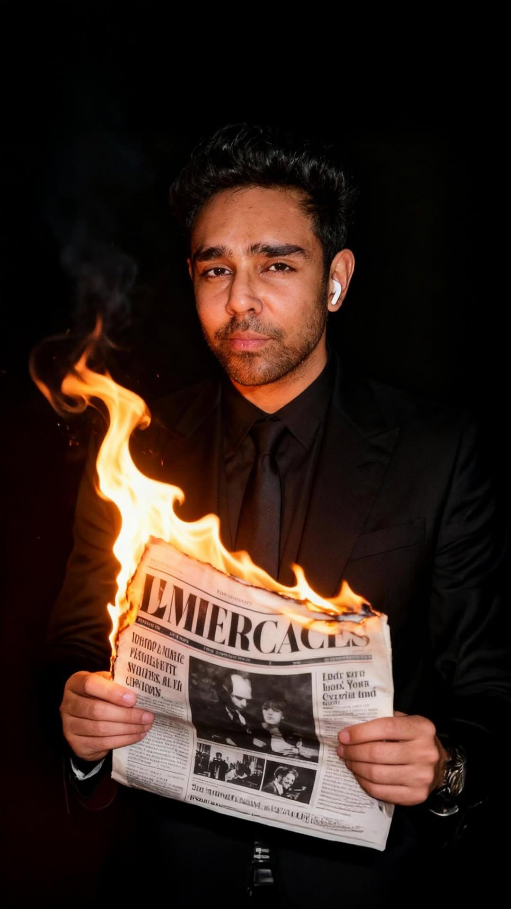
PROMPT #22
Burning newspaper, high-contrast
Cinematic editorial photograph of person holding up a burning newspaper, flames curling dramatically around paper edges. Newspaper headline reads bold text with modern typography, editorial style layout, featuring black and white images and quotes. Subject is dressed in sharp black suit. Dark background enhances fire's glow, creating contrast with warm highlights on subject's clothing. Use the reference image for the face to maintain likeness. Ultra-detailed, high-contrast lighting, IMG_2034.CR2
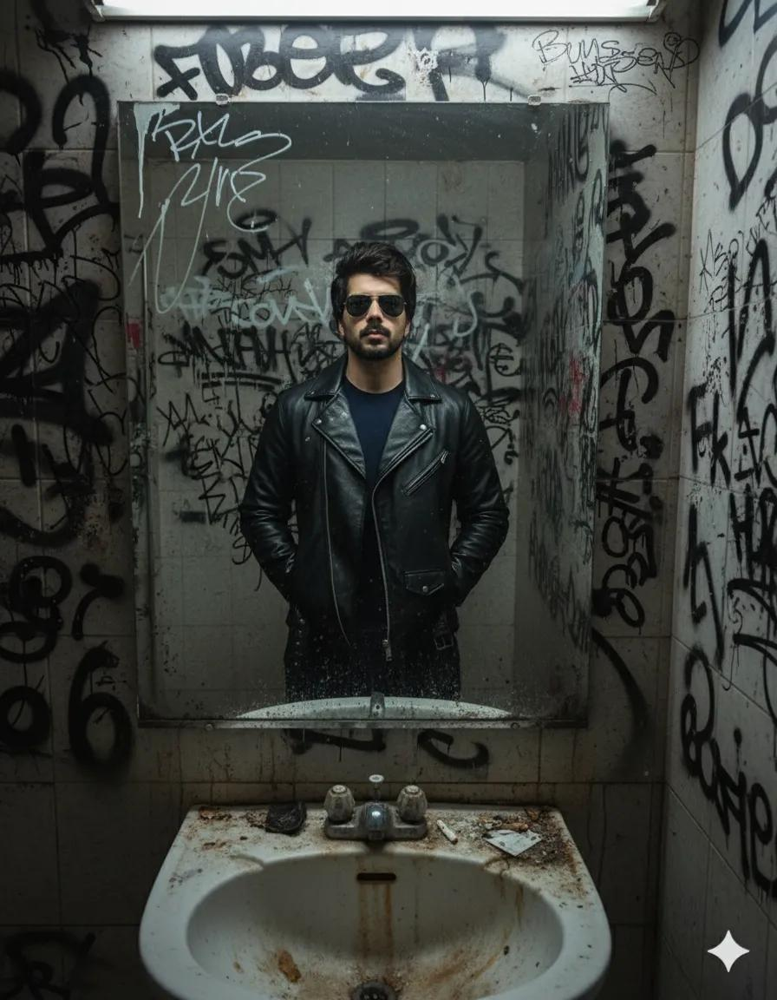
PROMPT #23
Raw, urban vibe
"A man (photo uploaded) wearing a black leather biker jacket and dark sunglasses stands in a gritty, graffiti-covered bathroom. He faces the mirror, giving a rebellious expression calm yet defiant. The mirror is streaked with scratches and reflects the chaotic wall filled with black graffiti tags and scribbles. The sink below is dirty and metallic, adding to the raw, underground, urban vibe."
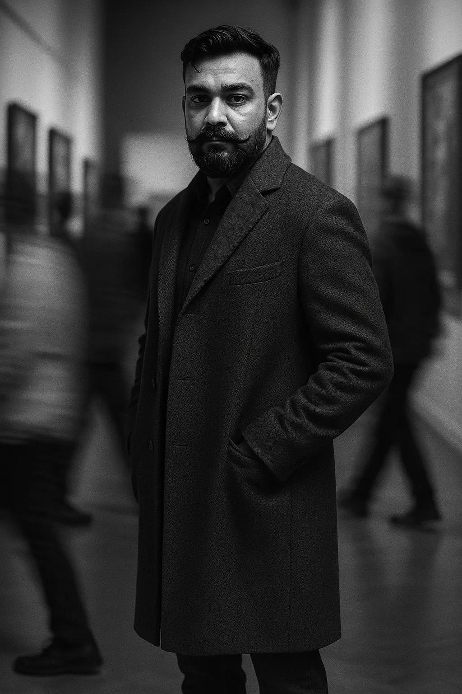
PROMPT #24
Elegant, black-and-white portrait
Ultra HD 8K photorealistic full-body editorial portrait, black-and-white, of a young man in a long tailored wool overcoat standing in a busy gallery — three-quarter profile, hands in pockets, looking directly at camera with a quiet confident gaze. Cinematic Rembrandt key light from camera-left with subtle rim/backlight to separate shoulder, razor-sharp focus on eyes and face, shallow depth of field that renders background frames softly.
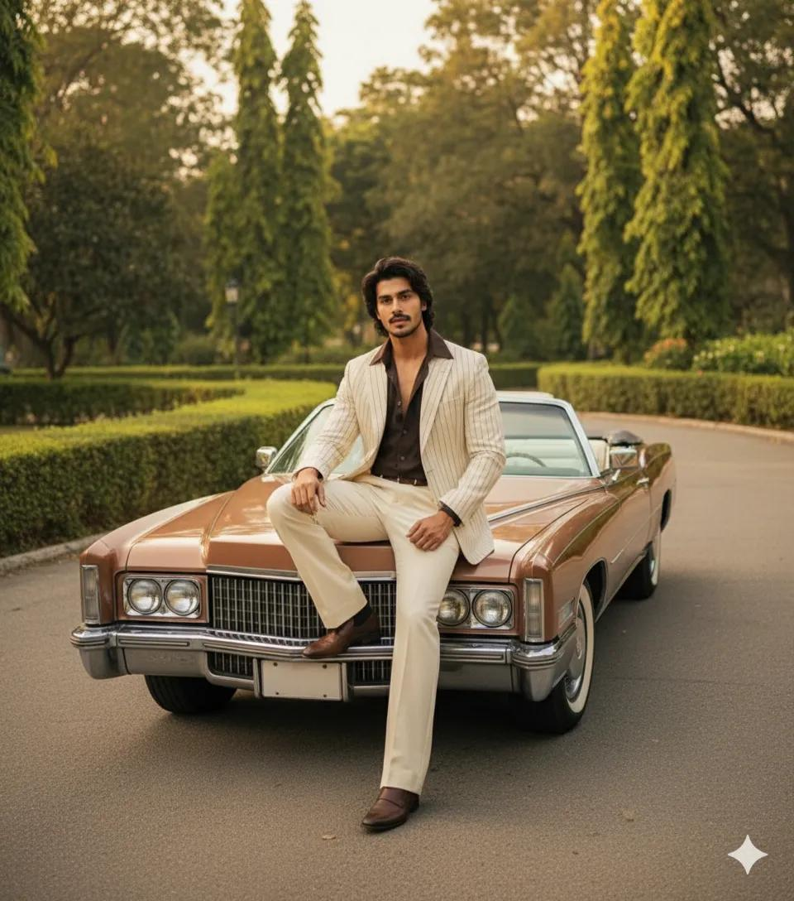
PROMPT #25
Vintage 1970s Bollywood style
Create a vintage 1970s Bollywood-inspired photograph of a stylish men sitting casually on the hood of a classic car. he is dressed in a cream pinstriped blazer, cream bell-bottom trousers, & a dark brown shirt with the top buttons open, paired with brown formal shoes, giving a confident mafia-style look. The car has wide whitewall tires, chrome details, & a polished metallic body, reflecting sunlight. in the background, tall green trees and hedges frame the scene. The photograph has the warm
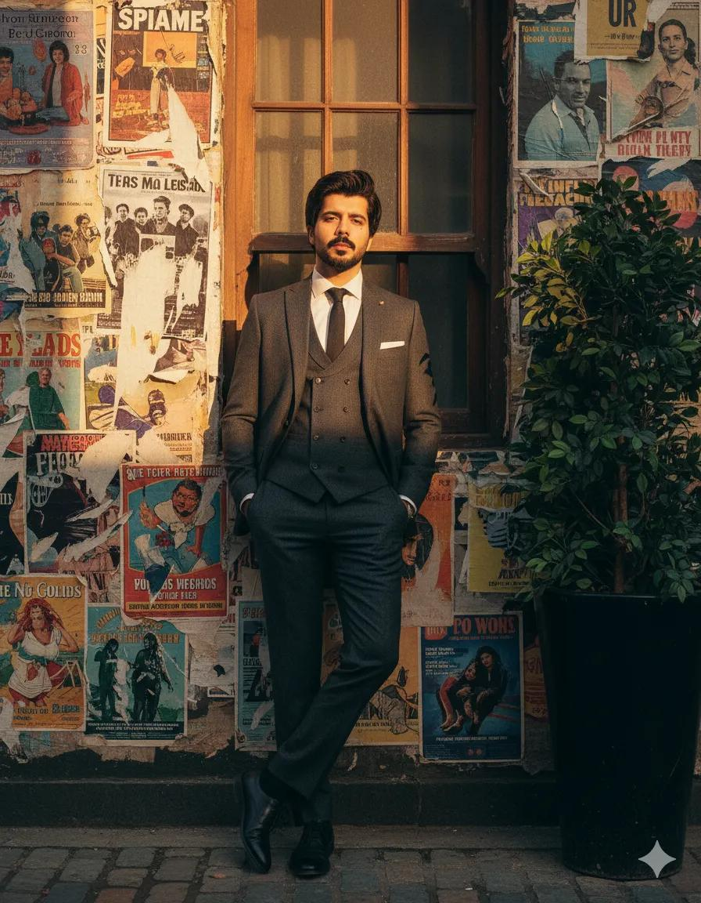
PROMPT #26
Raw, cinematic portrait
i a raw cinematic candid street A photograph of a young Southeast Asian handsome man with a thin beard, 3 Herringbone 3-Piece Suit. He is standing, leaning his back casually against the chaotic poster wall, My expression is confident and neutral, and Behind him, the wall is fully plastered with overlapping vintage music posters, soft silhouette of an old wooden window casts warm golden hour light across the posters, creating creamy highlights and shadows. Beside him sits a lush pot o.
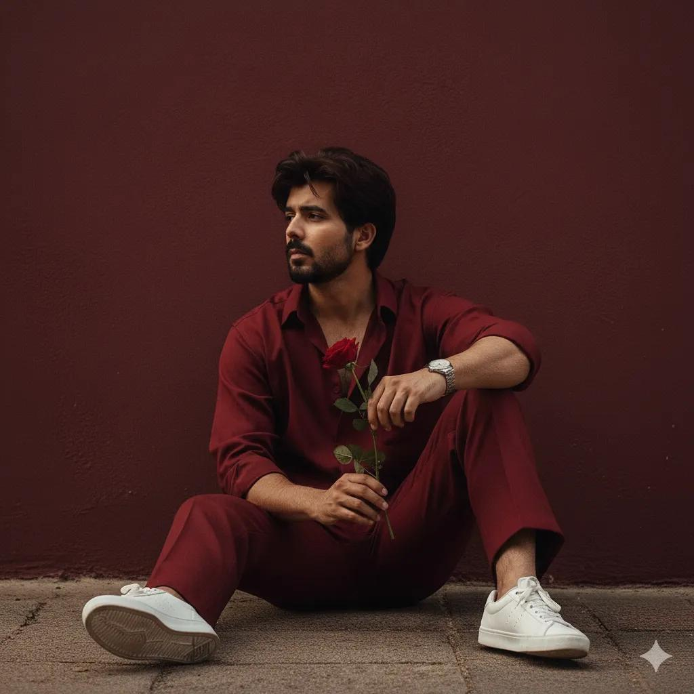
PROMPT #27
Romantic, retro aesthetic
A full-body, side-angle portrait of a handsome 25-year-old boy me(use my image for refrence with accurate face), approximately 5'5" tall. He is sitting on the ground in a stylish pose against a solid deep wine-colored wall, he is looking from left to right ahead with deep shadows creating a 90S movie and romantic, windy environment. He is wearing a perfect red wine-colored, retro aesthetic shirt with matching pants and white sneakers. He has a silver watch and is holding a single rose flower.
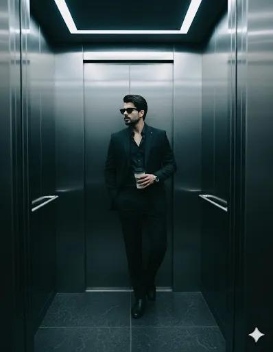
PROMPT #28
Elegant, mysterious elevator scene
"Edit the photo to be standing casually in a modern style elevator with reflective metal walls. He is wearing an all black outfit: a black suit and trousers, wearing sunglasses and holding a cup of take-away coffee. Elegant and edgy style with a mysterious feel. The dim lighting from the neon lights on the ceiling creates subtle shadows."
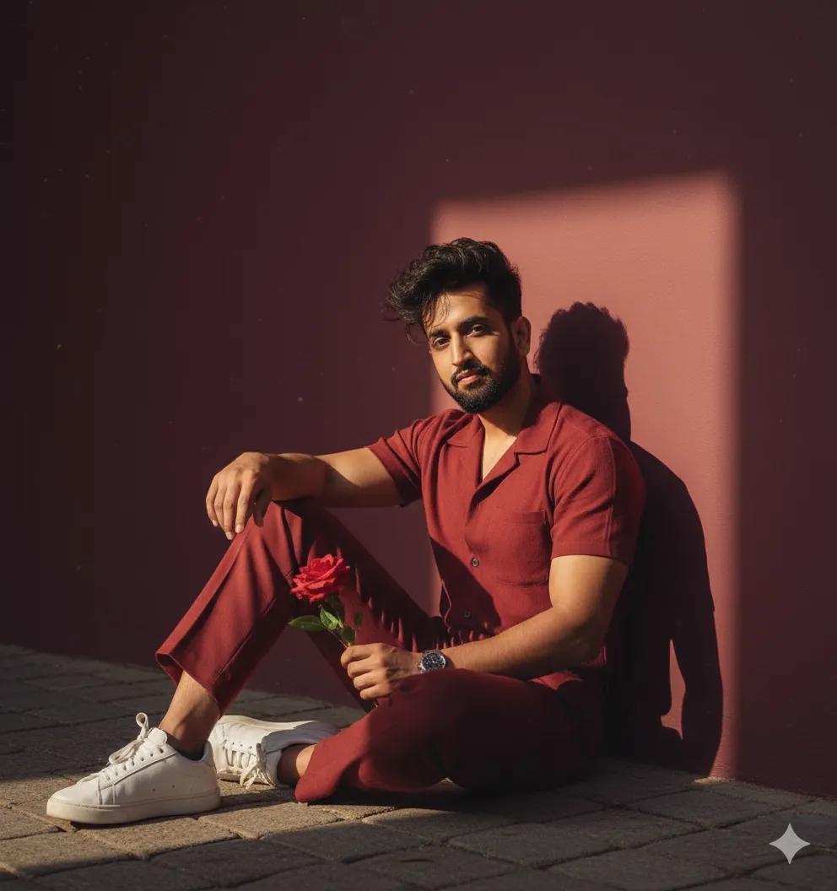
PROMPT #29
Romantic, retro aesthetic
A full-body, camera look-angle portrait of a handsome 22-year-old boy, approximately 5'5" tall. He is sitting on the ground in a stylish pose against a solid deep wine-colored wall, with deep shadows creating an 90s movie and romantic, windy environment. He is wearing a perfect red wine-colored, retro aesthetic shirt with matching pants and white sneakers. He has a silver watch and is holding a single rose flower in hand.
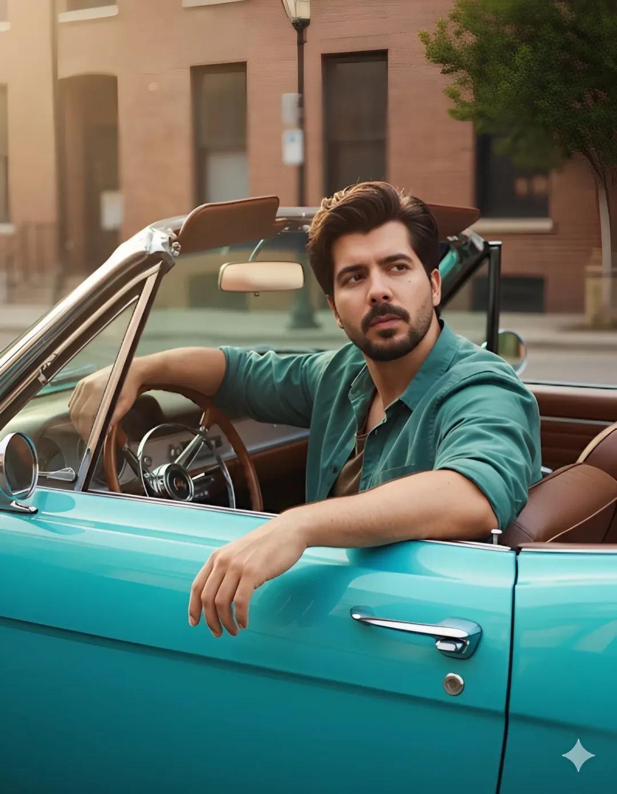
PROMPT #30
A man sitting in a convertible car, looking away from the camera
A man sitting in a convertible car, looking away from the camera, wearing a blue shirt and white jeans, with a beard and a mustache.